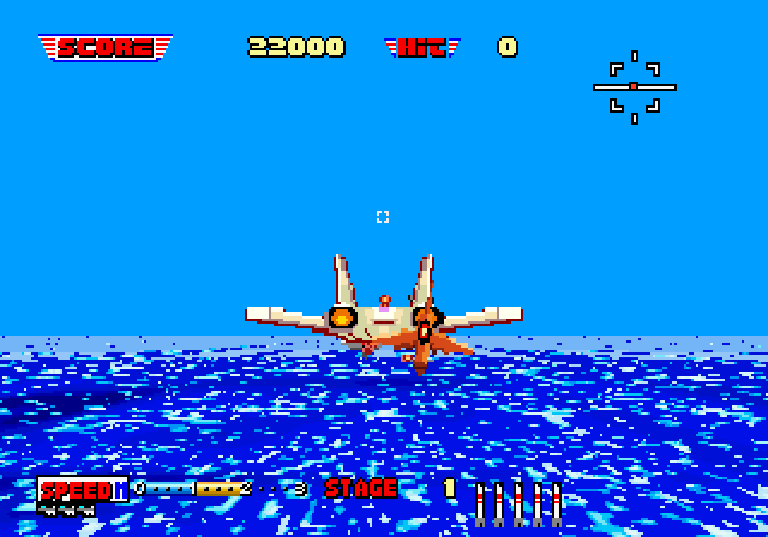
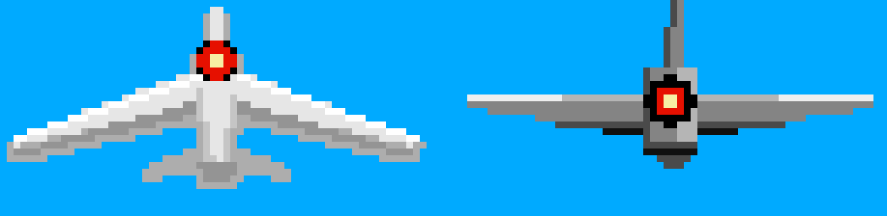

The complaint was real — about the measurement. Three independent re-measurements of the same question gave 85 %, 91 % and 53 %, and only the last one used a pilot that could actually hit anything.
Three arcade lateral quantities landed at once. The jet's rail, its top speed and its rail-to-rail time all match the arcade — two to the digit, the third within 1.1 %. The jet used to slide across most of the screen; it now sits where the arcade's does. Verified by a judge who wrote its own probe without copying ours.
The enemy jets are no longer white birds — 5.7 % to 33.9 % of pixels dark, six distinct silhouettes where four existed. And a criterion repair found the arcade band was itself measured off an upscaled frame, which puts our number inside it rather than above it.
Eleven withdrawals, three of them headlines. Three share one cause: an instrument run below its own stated validity floor. Aircraft identity read at 0.42× scale. An attract statistic measured with deaths on. A kill table with the trigger never pulled. All three produced stable, plausible, wrong numbers — and in all three the limitation was already written down without its consequence drawn.
| what a motionless stick scores, vs a pilot that aims | seeds | result |
|---|---|---|
| build lane — missile only, probe never fired the gun | 1 | 22 % |
| same, with the gun counted | 1 | 85 % |
| judge, independently | 3 | 91 % |
| feel critic — aiming pilot flying where the gun can kill | 8 | 53 % |
The "best aiming pilot" everyone measured against was flying the nearest enemy at depth 26–88. The gun can only kill between 2.6 and 7.06. The two bands do not overlap — in every gun arm, the aiming pilot was pointing at empty sky. Give it the gun's real licence and a player gets 43 kills per 90 s where a dead stick gets 24. That is a difference you can feel.


camo livery, whose palette was
not touched — only its drawing — and which lands at
91.2 % dark against the arcade's true-native
92.5 %. One drawing program, two liveries, two stages, both correct.
I measured a dead file and reported it as a root cause. I told you 75.5 % of the explosion sprite was too dark. The number is exact — and nothing imports that file; the build emits no explosion asset at all. The on-screen explosion is procedural and already fragments and re-flares like the arcade's. R10's critic made the same error and prescribed a fix for it. Two agents agreeing to the digit on the same wrong object is not corroboration.
A gap I wrote was inverted, then un-inverted. I said the jet's envelope was fine and the sight was broken. A lane proved the opposite, retracted its own measurement under challenge, and shipped the right fix — the arcade data it had published was reading enemy aircraft, because at 0.42× scale a twin-nozzle F-14 and a single-nozzle enemy are the same shape.
And the lever everyone named for R12 is a null lever. Both lanes and I converged on the gun's assist cone. Sweeping it changes nothing: the assist supplies no lateral aim at all, only a depth ramp.
The arcade's sight and its lock bracket are both drawn glyphs, so the distance between them is readable. 11 of 12 arcade bracket tracks never come within 8.3 %W of the arcade's own sight — median closest approach 18.6 %W, all twelve cropped and looked at, four windows, three stages, consecutive 60 Hz.
R11 gated our tracking bracket on the missile's cone and retired the old rule that the bracket tracks the nearest threat continuously. The measurement says the old rule was right. The gate matched the arcade's bracket-presence percentage by deleting exactly the brackets the arcade draws.
p = 0.023 — still at the muzzle. Fix the path or bound the hit test.Every claim in this round was challenged by someone who did not write it. A lane retracted its own headline under challenge and shipped the opposite fix. Two lanes appeared to disagree and the reconciliation found neither was wrong — each had called a different tree "wide" — and that reconciliation produced the round's strongest result. The feel critic withdrew its own first table before publishing the second.
And a mechanism shipped that should outlast the project: a constant derived from another is now imported rather than transcribed, with a witness recording what the figures were measured at. Change the source and it prints one line naming every figure that just went stale and the tool that re-measures them. It warns rather than throws — a hard failure would turn a stale comment into a black screen — and it is verified to fire.